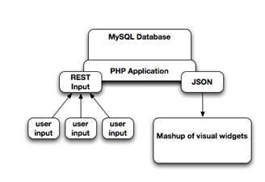
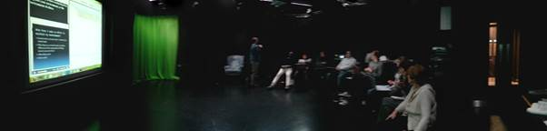

OMDL Community
Reflections on Using OMDL in Education
The Omelette project has developed demonstrators for OMDL in Apache Rave and Moodle. Mark Johnson writes about the work that he has done to demonstrate the capabilities of these interoperable mashups in education, and considers the role OMDL in education and beyond.
What is a mashup?
OMDL (Open Mashup Description Language) is a specification for recreating mashups on different platforms. As a technical question, this is hardly problematic. Indeed, it might be one of those ‘no-brainer’ standards where everyone asks "why on earth did nobody do this before?" But I suspect the situation is a bit more complicated with OMDL. Really useful standards like MIDI or HTML require common identification of an interoperability problem with a particular form of content amongst a significantly large constituency of users. With MIDI and HTML it is generally obvious to large numbers of users that there needs to be compliance with technical standards across platforms that interpret the content. So the question with OMDL, as with many other standards in E-learning is "Why Mashups?" (just as the question around e-portfolio standards has been "Why e-portfiolio", and the question around SCORM content-packaging has been "Why Content Packaging?")
In arguing "Why Mashups" we need to be clear about what a Mashup is. The technical description is simple: an aggregation of content on a single page from a variety of sources. A large part of what a mashup does concerns the maximal use of screen space with dynamically sourced data and tools. Typically, the content is graphical, often it comprises tools or widgets. Pageflakes, Netvibes, iGoogle are all examples. Mashups are increasingly possible through the use of object embedding within HTML contexts, so the aggregation of Mashups forms part of process of recombination that is increasingly characteristic of web communications.
Given the general thinking about Mashups as graphical and tool-oriented, some pertinent questions emerge: is an RSS feed a mashup? What about a single tool which combines many sources of data? Generally these technologies are not considered Mashups - certainly in the sense that OMDL considers. OMDL mashups are generally widget-oriented, with tools occupying some graphical space on the screen in a small block. But to see OMDL as a kind of Visual RSS is not far from what it attempts.
How is a mashup useful?
That is a technical description of a Mashup. But what about the human experience of the Mashup? In web communications (for example, blogposts) recombination is increasingly providing a means of self-expression. A post may well include an embedded video from YouTube, pictures from other sites, maybe even a tool and some commentary. Collages of content which can be easily created serve to convey complex messages, allowing authors to convey meanings not just through the texts that they write, but through their choices of references and inclusion of content from other places. The way such recombination works in communication is still poorly understood. Yet it has been practised for centuries by artists and poets. It is generally considered that through these means, "connotative" communication (as opposed to "denotative" communication) occurs. Perhaps part of this process is that it provides a means whereby somebody engaging with the communication has a choice of where to begin, or what to take from the assemblage: the video might catch their eye, whilst the commentary might be considered irrelevant, for example. But beyond self-expression, what use is this principle in business and management?
Taking the principle of choice and flexibility of interpretation of the Mashup in different ways, the communication of many different messages on the screen at the same time can provide a way in which many people might see something that they might find interesting (but not necessarily the same thing). The critical issue in management is decision, and decision depends on communication. If there is a mashup with "something for everyone" then potentially there is a context for communication, or something around which a discussion can be coordinated. This becomes more interesting if people are able to engage with the things they are looking at, and the results of their manipulations can be fed back in real-time to everyone else. At the very least, Mashups can enable the assemblage of sets of functionality for particular groups of people.
Is there still a space still for interoperable widget specifications like W3C?
Yes, there is definitely a space for it. I’m just underlining some of the challenges in terms of achieving adoption, and that the barriers are not technical, they are entirely commercial.
The Bolton OMDL demonstrator
In piloting mashups with a view to establishing a solid case for the value of their interoperability through OMDL we focused on this approach of creating a mashup around which a discussion can be coordinated. A number of situations have been created using groups of users working with a 'giant mashup' of tools providing information, video, and display of data feedback. Each tool in the mashup is connected to a joint data feed which could be contributed to by users engaging with tools on personal devices. The technical architecture for the data transfer is shown in Figure 1. The first scenario (shown in Figure 2) involved students reflecting on issues of their "employability". On screen were widgets which played videos, asked questions, and displayed results. The "mashup" was not a static entity, but changed as the activities of the participants were coordinated.


Each participant had a device (usually a PC or a tablet, sometimes a phone) which displayed a tool for interaction. The tool displayed to participants changed according to the widgets that were displayed on the screen. The combination of the multi-level visual and auditory stimulus on the screen combined with the common experience of having the tools displayed on their devices change provided the context for discussion and engagement. In the 'employability' scenario, the students were asked to respond in text to questions that were presented through video examples (for example, mock interviews, helping a learner gain confidence in looking for jobs, etc). As they submitted responses to the questions during the video, so their responses were displayed on the screen in number of different ways, including a 'straight' display of results, plus a number of automatic 'groupings' of the data.
Technically this was made possible using the D3 javascript library animations displayed using the Gridster library, with a data back-end that fed data to a variety of the D3 visualisations. The real-time effect of the interactions created rich conversation in the room. Importantly for the students (many of whom were not particularly confident) was the realisation that their experience of employability was not unique, and was in fact shared by many other people. This realisation itself helped to created a safe atmosphere for delving into some of the deep difficulties that students faced.
Feedback from this session was very positive. Students reported that "they felt free to play". A number of students expressed particular interest in the technologies and how they believed the process could improve methods of data collection in their own disciplines.
A second session was conducted with teachers where the results of the session with students was presented. In creating this session we were able to adapt the mashup from the first session. In our case we were not interested in exporting to other platforms, but rather in saving and adapting for later resuse in Moodle. This is a paradigmatic use case for OMDL, which may be of value within a single application or across multiple systems.
There were some technical problems in this session involving the refreshing of feedback, but teachers were similarly introduced to the idea of the 'big mashup' and individual tools for engaging with it. Similar experiences to those of the students could be observed - particularly in the moments where tools changed which prompted conversation ("what's this?"... "ah, I think it's a kind of game..."). Amongst the individual tools demonstrated was a shared editor (using Etherpad) which did provided feedback and collaboration (although time didn't permit an activity around this). However, the sequencing of individual tools stimulated conversation.
A small-scale distance-based scenario has also been attempted with many of the same kinds of tools. As with other instances, the coordination of activity and display of tools for individuals provided the focus for discussion (this time around teaching practice)
Concluding thoughts
So is there something in Mashups? We have demonstrated how mashups can be deployed and used in Moodle, and how they can be saved and exchanged. The question is whether the thing that is in a mashup something that we might reasonably want to package and reproduce in another context? From the student scenario, there was much interest in the technology. "How can I do this myself?" was a typical question at the end of the session. Being able to say "here is a package which you can import into your own context (Moodle, Rave, etc) and which will reproduce these tools for you" has potential as a response to this. Whether that is more attractive than being told "click on this URL and you'll see the tools" is a fundamental question about user autonomy and ownership of the technology. The implementation of OMDL in Moodle provides users and researchers with the opportunity to experiment with configurations of user autonomy which are not possible with traditional VLE functionality, and in this sense OMDL offers something of interest to the world of education.